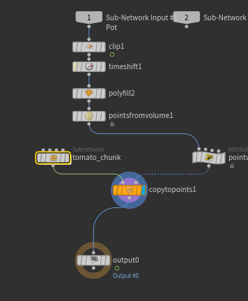
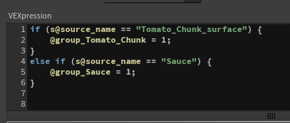
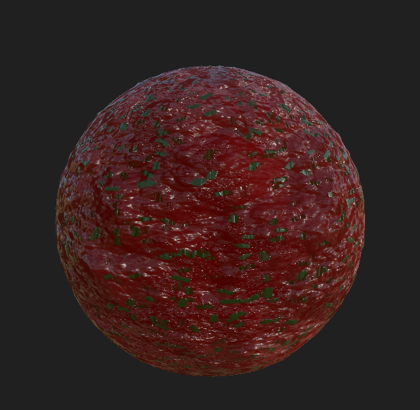
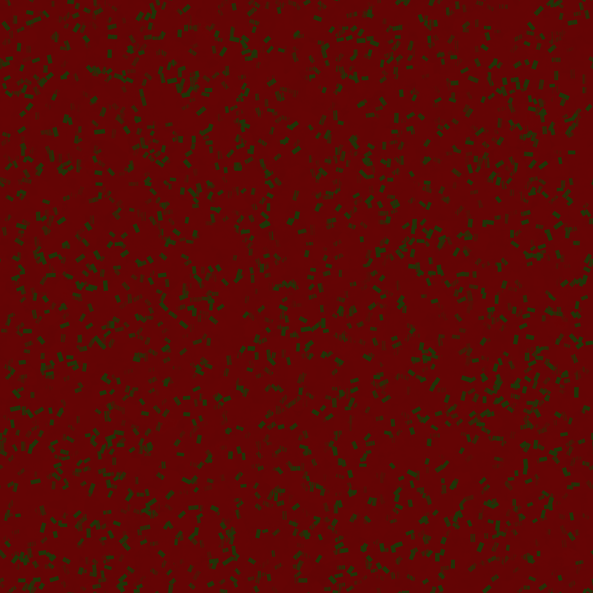

Week9
VSFX 728 - Week 9
Hello, this is my final project of the VSFX 728's blog!
May 15
Things To Do:
1. Figure out why the File Cache failed
2. Change the current emission source
3. Add additional emission sources (tomato chunks and oil on the surface)
4. Test textures – focus on the sauce
Final Test (FX)
I’m not very satisfied with the simulation because the reference video looks chunkier and more segmented when the sauce falls, while mine feels too smooth and fluid. So, I’d like to add more tomato chunks in next week’s simulation to better match that look.
FileCache fail
I couldn’t file cache stably using the RTX 4090, so I changed the OpenGL mode to switch from CPU to GPU. However, it was quite slow — simulating 500 frames took approximately 6 hours.


Change Emission source
I got inspiration from the official example MPMWaterGlass and changed the emission source. The previous setup required more time for the sphere to fall and collide with the pot, but now I clip geometry from the pot and use PolyFill instead, which saves some time.


Add other source
I added two more layers to the tomato sauce. The first is tomato chunks, which make the fluid look chunkier, and I also noticed a thin layer of oil on the surface of the sauce.


Tomato Chunk

I chopped a part of the pot to use as the emission source. Then I created a single sphere to represent a tomato chunk, copied it to points, and used a wrangle node to give the chunks varying sizes and direction.

To assign different materials to the three emission sources, I separated them based on their names.
Oil
The oil layer looks too sticky and heavy, so I plan to lower its density and reduce the emission source for a more realistic result.
Test textures (tomato sauce)
I used Substance Designer to create a procedural texture and also added green onion on the surface. If time allows, I’d also be willing to add onion to make the texture look more realistic.
This is the tutorial I used to learn how to create the texture.

These are textures that I generated procedurally. （Base Color, Roughness, AO, Normal, Height)





This is where I assigned the texture and tested it in Houdini. Right now, it looks somewhat plastic-like, so I still need to explore ways to improve its realism.